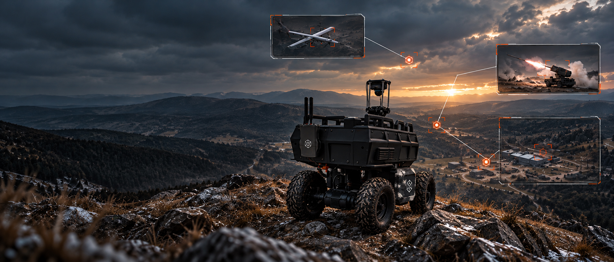

ISR & Perimeter Reconnaissance
Observe. Patrol. Detect. Report.
Explore MissionIntelligence, Surveillance and Reconnaissance (ISR) operations depend on continuous situational awareness, particularly across large, remote or difficult-to-access areas. TESS SPACE envisions autonomous ground platforms supporting perimeter monitoring, reconnaissance and observation missions by carrying sensors into positions where maintaining a constant human presence may be impractical or unnecessarily demanding. Through autonomous navigation, onboard perception and mission planning, the UGV could support predefined patrol routes, observe designated areas and provide sensor information to operators for further assessment. The objective is to extend operational visibility, reduce repetitive monitoring tasks and help personnel focus on interpreting information and making mission-critical decisions. Human operators remain responsible for operational oversight and decisions, while the platform serves as a mobile sensor and reconnaissance asset.